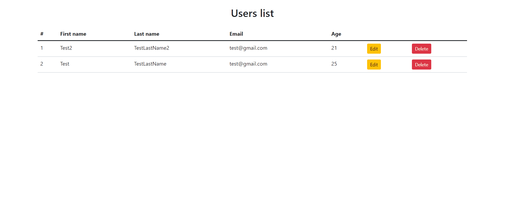

Редагування та видалення документів у firebase (№ 2)

1. Створіть функцію modalGetUser(id) яка прийматиме id документа та зчитуватиме інформацію про користувача із бази данних. Записуйте у форму значення вибраного користувача. Зберігайте id користувача у якого в майбутньому будете зберігати нові значення.
<script>
// Отримати всю інформацю про документ із вказаним id
db.collection("users")
.doc(id)
.get(user)
.then(function(res){
const data = res.data();
console.log(data);
//отримане значення можна відобразити або присвоїти його якомусь полю для введення
document.getElementById("name").value = data.name;
....
});
</script>
2. Привяжіть до кнопки Save changes функцію editUser(id). Функція буде зберігати редаговані поля для користувача.
3. Зберігайте данні по кліку на кнопку "Save changes"
<script>
const user = {
//...
}
// редагування документу у firebase по id
//update оновлює вказані поля документа не змінюючи інші які не вказані у user
db.collection("users").doc(id).update(user);
// Можна відслідковувати заверешення операції видалення
db.collection("users").doc(id).update(user).then( function(){
// дії після редагування
console.log("Document is updated!")
});
//************************
//set повністю замінює документа
db.collection("users").doc(id).set(user);
// Можна відслідковувати заверешення операції видалення
db.collection("users").doc(id).set(user).then( function(){
// дії після редагування
console.log("Document is updated!")
});
</script>